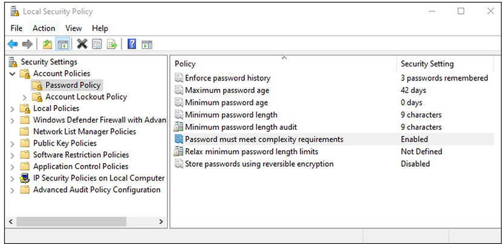

Table of Contents for
CompTIA Security+ All-in-One Exam Guide, Sixth Edition (Exam SY0-601)), 6th Edition
- Cover (01:09 mins)
- Title Page (01:09 mins)
- Copyright Page (03:27 mins)
- Dedication (01:09 mins)
- About the Authors (04:36 mins)
- Contents (19:33 mins)
- Preface (02:18 mins)
- Acknowledgments (01:09 mins)
- Introduction (12:39 mins)
-
Part I Threats, Attacks, and Vulnerabilities (01:09 mins)
- Chapter 1 Social Engineering Techniques (35:39 mins)
- Chapter 2 Type of Attack Indicators (37:57 mins)
- Chapter 3 Application Attack Indicators (33:21 mins)
- Chapter 4 Network Attack Indicators (39:06 mins)
- Chapter 5 Threat Actors, Vectors, and Intelligence Sources (44:51 mins)
- Chapter 6 Vulnerabilities (31:03 mins)
- Chapter 7 Security Assessments (23:00 mins)
- Chapter 8 Penetration Testing (25:18 mins)
-
Part II Architecture and Design (01:09 mins)
- Chapter 9 Enterprise Security Architecture (26:27 mins)
- Chapter 10 Virtualization and Cloud Security (25:18 mins)
- Chapter 11 Secure Application Development, Deployment, and Automation Concepts (27:36 mins)
- Chapter 12 Authentication and Authorization (33:21 mins)
- Chapter 13 Cybersecurity Resilience (39:06 mins)
- Chapter 14 Embedded and Specialized Systems (41:24 mins)
- Chapter 15 Physical Security Controls (49:27 mins)
- Chapter 16 Cryptographic Concepts (42:33 mins)
-
Part III Implementation (01:09 mins)
- Chapter 17 Secure Protocols (20:42 mins)
- Chapter 18 Host and Application Security (46:00 mins)
- Chapter 19 Secure Network Design (67:51 mins)
- Chapter 20 Wireless Security (25:18 mins)
- Chapter 21 Secure Mobile Solutions (43:42 mins)
- Chapter 22 Implementing Cloud Security (24:09 mins)
- Chapter 23 Identity and Account Management Controls (33:21 mins)
- Chapter 24 Implement Authentication and Authorization (37:57 mins)
- Chapter 25 Public Key Infrastructure (55:12 mins)
- Part IV Operations and Incident Response (01:09 mins)
- Part V Governance, Risk, and Compliance (01:09 mins)
- Part VI Appendixes and Glossary (01:09 mins)
- Glossary (65:33 mins)
- Index (67:51 mins)
CHAPTER 23
Identity and Account Management Controls
In this chapter, you will
• Examine identity concepts and practices
• Examine account types
• Review different account policies used to manage accounts
• Given a scenario, implement identity and account management controls
Identity forms part of the foundation of authentication in computer systems. The second part of this foundation is the use of accounts that are managed by a series of policies to enforce a level of rational risk associated with their use. This chapter explores the topic of identity, accounts, and the related policies to manage these entities in the enterprise.
Certification Objective This chapter covers CompTIA Security+ exam objective 3.7: Given a scenario, implement identity and account management controls.
Identity
Identification is the process of ascribing a computer ID to a specific user, computer, network device, or computer process. The identification process is typically performed only once, when a user ID is issued to a particular user. User identification enables authentication and authorization to form the basis for accountability. For accountability purposes, user IDs should not be shared, and for security purposes, user IDs should not be descriptive of job function. This practice enables you to trace activities to individual users or computer processes so that users can be held responsible for their actions. Identification usually takes the form of a logon ID or user ID. A required characteristic of such IDs is that they must be unique.
Identity Provider (IdP)
The term identity provider (IdP) is used to denote a system or service that creates, maintains, and manages identity information. IdPs can range in scale and scope—from operating for a single system to operating across an enterprise. Additionally, they can be operated locally, distributed, or federated, depending on the specific solution. Multiple standards have been employed to achieve these services, including those built on the Security Assertion Markup Language (SAML), OpenID, and OAuth. These standards are covered in Chapter 24, “Implement Authentication and Authorization.”

EXAM TIP The identity provider (IdP) creates, manages, and is responsible for authenticating identity.
Attributes
How would you describe the elements of an identity? Identity attributes are the specific characteristics of an identity—name, department, location, login ID, identification number, e-mail address, and so on—that are used to accurately describe a specific entity. These elements are needed if one is to store identity information in some form of directory, such as an LDAP directory. The particulars of a schema need to be considered to include attributes for people, equipment (servers and devices), and services (apps and programs), as any of these can have an identity in a system. The details of schemas have already been taken care of via Active Directory, various IdPs, and so on, so this is not something that needs to be created; however, it does need to be understood.
Certificates
Certificate-based authentication is a means of proving identity via the presentation of a certificate. Certificates offer a method of establishing authenticity of specific objects such as an individual’s public key or downloaded software. A digital certificate is a digital file that is sent as an attachment to a message and is used to verify that the message did indeed come from the entity it claims to have come from. Using a digital certificate is a verifiable means of establishing possession of an item (specifically, the certificate). When the certificate is held within a store that prevents tampering or extraction, this becomes a reliable means of identification, especially when combined with an additional factor such as something you know or a biometric. The technical details behind digital certificates are covered in Chapter 25, “Public Key Infrastructure.”
Tokens
An access token is a physical object that identifies specific access rights and, in authentication, falls into the “something you have” factor. Your house key, for example, is a basic physical access token that allows you access into your home. Although keys have been used to unlock devices for centuries, they do have several limitations. Keys are paired exclusively with a lock or a set of locks, and they are not easily changed. It is easy to add an authorized user by giving the user a copy of the key, but it is far more difficult to give that user selective access unless that specified area is already set up as a separate key. It is also difficult to take access away from a single key or key holder, which usually requires a rekey of the whole system.
In many businesses, physical access authentication has moved to contactless radio frequency cards and proximity readers. When passed near a card reader, the card sends out a code using radio waves. The reader picks up this code and transmits it to the control panel. The control panel checks the code against the reader from which it is being read and the type of access the card has in its database. The advantages of this kind of token-based system include the fact that any card can be deleted from the system without affecting any other card or the rest of the system. In addition, all doors connected to the system can be segmented in any form or fashion to create multiple access areas, with different permissions for each one. The tokens themselves can also be grouped in multiple ways to provide different access levels to different groups of people. All of the access levels or segmentation of doors can be modified quickly and easily if building space is repurposed. Newer technologies are adding capabilities to the standard token-based systems. Smart cards can also be used to carry identification tokens. The primary drawback of token-based authentication is that only the token is being authenticated. Therefore, the theft of the token could grant anyone who possesses the token access to what the system protects.
The risk of theft of the token can be offset by the use of multifactor authentication (described in Chapter 12, “Authentication and Authorization”). One of the ways that people have tried to achieve multifactor authentication is to add a biometric factor to the system. A less expensive alternative is to use hardware tokens in a challenge/response authentication process. In this way, the token functions as both a “something you have” and “something you know” authentication mechanism.
Several variations on this type of device exist, but they all work on the same basic principles. The device has an LCD screen and may or may not have a numeric keypad. Devices without a keypad will display a password (often just a sequence of numbers) that changes at a constant interval, usually about every 60 seconds. When an individual attempts to log in to a system, they enter their own user ID number and then the number that is displayed on the LCD. These two numbers are either entered separately or concatenated. The user’s own ID number is secret, and this prevents someone from using a lost device. The system knows which device the user has and is synchronized with it so that it will know the number that should have been displayed. Since this number is constantly changing, a potential attacker who is able to see the sequence will not be able to use it later, since the code will have changed. Devices with a keypad work in a similar fashion (and may also be designed to function as a simple calculator). The individual who wants to log in to the system will first type their personal identification number into the calculator. They will then attempt to log in. The system will then provide a challenge; the user must enter that challenge into the calculator and press a special function key. The calculator will then determine the correct response and display it. The user provides the response to the system they are attempting to log in to, and the system verifies that this is the correct response. Since each user has a different PIN, two individuals receiving the same challenge will have different responses. The device can also use the date or time as a variable for the response calculation so that the same challenge at different times will yield different responses, even for the same individual.
SSH Keys
SSH keys are access credentials used by the Secure Shell (SSH) protocol. They function like usernames and passwords, but SSH keys are primarily used for automated processes and services. SSH keys are also used in implementing single sign-on (SSO) systems used by system administrators. SSH keys are exchanged using public key cryptography, and the keys themselves are digital keys. The concepts of public key cryptography are covered in Chapter 16, “Cryptographic Concepts.”
Smart Cards
Smart cards are devices that store cryptographic tokens associated with an identity. The form factor is commonly a physical card, credit card sized, that contains an embedded chip that has various electronic components to act as a physical carrier of information.
The U.S. federal government has several smart card solutions for identification of personnel. The Personal Identity Verification (PIV) card is a U.S. government smart card that contains the cardholder’s credential data used to determine access to federal facilities and information systems. The Common Access Card (CAC) is a smart card used by the U.S. Department of Defense (DoD) for active-duty military, Selected Reserve members, DoD civilians, and eligible contractors. Like the PIV card, it is used for carrying the cardholder’s credential data, in the form of a certificate, and to determine access to federal facilities and information systems.
EXAM TIP Remember the various uses for tokens, keys, and smart cards. An access token is a physical object that identifies specific access rights and, in authentication, falls into the “something you have” factor. SSH keys are primarily used for automated processes and services. A PIV card is a smart card used for federal employees and contractors. CAC cards are used by the U.S. DoD for active-duty military, Selected Reserve members, DoD civilians, and eligible contractors.
Account Types
To manage the privileges of many different people effectively on the same system, a mechanism for separating people into distinct entities (users) is required, so you can control access on an individual level. It’s convenient and efficient to be able to lump users together when granting many different people (groups) access to a resource at the same time. At other times, it’s useful to be able to grant or restrict access based on a person’s job or function within the organization (role). While you can manage privileges on the basis of users alone, managing user, group, and role assignments together is far more convenient and efficient.
User Account
The term user account refers to the account credentials used when accessing a computer system. In privilege management, a user is a single individual, such as “John Forthright” or “Sally Jenkins.” This is generally the lowest level addressed by privilege management and the most common area for addressing access, rights, and capabilities. When accessing a computer system, each user is generally given a user ID—a unique alphanumeric identifier they will use to identify themselves when logging in or accessing the system. User IDs are often based on some combination of the user’s first, middle, and last names and often include numbers as well. When developing a scheme for selecting user IDs, you should keep in mind that user IDs must be unique to each user, but they must also be fairly easy for the user to remember and use. Because the user ID is used to identify the person who performed specific actions, it is important not to have generic or shared credentials. Either of these situations makes traceability to an authorized user difficult, if not impossible.
EXAM TIP Having unique, nonshared user IDs for all users of a system is important when it comes time to investigate access control issues.
With some notable exceptions, in general a user wanting to access a computer system must first have a user ID created for them on the system they wish to use. This is usually done by a system administrator, security administrator, or other privileged user, and this is the first step in privilege management—a user should not be allowed to create their own account.
Once the account is created and a user ID is selected, the administrator can assign specific permissions to that user. Permissions control what the user is allowed to do on the system—which files they may access, which programs they may execute, and so on. Whereas PCs typically have only one or two user accounts, larger systems such as servers and mainframes can have hundreds of accounts on the same system.
Account policy enforcement is an important part of user credential systems. Managing credentials begins with policies that state the desired objectives. Key elements of a policy include prohibition of sharing accounts and of generic accounts not assigned to a user. For users who have multiple roles, multiple accounts may be necessary, but these need to be delineated by policy rather than on an ad hoc basis. Credential management rules, such as password policy, should be enacted, including lockout and recovery procedures. When users no longer are authorized, such as when they leave the firm or change jobs, their accounts should be disabled, not removed.
Shared and Generic Accounts/Credentials
Shared accounts go against the specific premise that accounts exist so that user activity can be tracked. This said, there are times that shared accounts are used for groups like guests (guest accounts are covered in the next section). Sometimes the shared accounts are called generic accounts and exist only to provide a specific set of functionalities, such as in a PC running in kiosk mode, with a browser limited to accessing specific sites as an information display. Under these circumstances, being able to trace the activity to a user is not particularly useful.
A common form of a shared account is one created to run nightly batch operations. As every action must be associated to a user account, a shared account in the name of a batch user can be used to run batch jobs. This is a generic set of credentials, not actually associated with a single person but rather associated with a particular type of process (batch jobs, backups, and so on). These credentials are maintained by administrators but are reserved for specific uses, such as executing batch jobs. Because these accounts are in essence local and are being used to run tasks, they can be restricted in function (not permitted to log in, for instance), thus lowering their usefulness for an attacker.
A typical example found in many enterprises resembles the following scenario:
Problem: Organizations use a single account and password for multiple people: for example, the local global administrator account for Office 365 or the root account in Salesforce.
Risk: Commonly shared accounts are distributed and often the credentials (username and password) are put in a shared location. This is a serious no-no by security standards because you can’t tell from auditing who exactly accessed what and when they did it. You can see the account, but you have no idea which user was performing the actions.
Modern solution: An Azure AD administrator configures which applications a user can access by using the Access Panel and choosing the type of single sign-on best suited for that application. Using the password-based single-sign on type allows Azure AD to act as a kind of “broker” during the sign-on process for that app.
Guest Accounts
Guest accounts are frequently used on corporate networks to provide visitors access to the Internet and to some common corporate resources, such as projectors, printers in conference rooms, and so forth. Again, like generic accounts, these types of accounts are restricted in their network capability to a defined set of machines, with a defined set of access, much like a user visiting the company’s public-facing website via the Internet. As such, logging and tracing activity have little to no use, so the overhead of establishing a unique account does not make sense.
EXAM TIP Guest accounts are granted limited permissions and access. They are used primarily for visitors. It is common practice to disable guest accounts as well as other default accounts when not in use.
Service Accounts
Service accounts are accounts that are used to run processes that do not require human intervention to start, stop, or administer. From running batch jobs in the data center to executing simple tasks that an organization must complete for purposes of regulatory compliance, many reasons exist for running processes with service accounts that don’t require an account holder. From a security perspective, administrators can configure service accounts to minimize risks associate with them. For example, in Windows systems, administrators can prevent service accounts from logging in to the system. This limits some of the attack vectors that can be applied to these accounts. Another security provision that can be applied to service accounts that run batch jobs at night is to restrict when they can run. Any service account that has to run in an elevated privilege mode can also be designated to receive extra monitoring and scrutiny.
EXAM TIP Service accounts run without human intervention and are granted only enough permission to run the services they support.
Account Policies
The key method used to control access to most systems is still one based on passwords. In conjunction with a strongly enforced account policy that prohibits sharing of passwords and credentials, use of passwords forms the foundation to support the concept that each user ID should be traceable to a single person’s activity. Passwords need to be managed to provide appropriate levels of protection. They need to be strong enough to resist attack, and yet not too difficult for users to remember. An account policy can act to ensure that the necessary steps are taken to enact a secure password solution, both by users and by the password infrastructure system.
Password Complexity
Every organization should have defined password complexity requirements that passwords must meet. Typical requirements specify that the password must meet the minimum length requirement and have characters from at least three of the following four groups: English uppercase characters (A through Z), English lowercase characters (a through z), numerals (0 through 9), and nonalphabetic characters (such as !, $, #, and %).
EXAM TIP You may be aware of new research from NIST that indicates that password complexity rules designed to force entropy into passwords do so at the risk of other, less-desirable password behaviors by users, such as writing them down or versioning them with an increasing number element. The latest NIST guidance (Special Publication 800-63B, June 2017) is that long passphrases offer the best protection. However, SP 800-63B was published after CompTIA released its Security+ exam objectives, so for the exam, you should know the tried-and-true password complexity requirements listed here.

NOTE Strong passwords aren’t enough these days. Computing power allows cybercriminal to run sophisticated programs to obtain or try massive numbers of credentials. That’s why relying on passwords alone is no longer sufficient. Specifically, companies should adopt tools like single sign-on (SSO) and multifactor authentication (MFA), also known as two-factor authentication.
Password History
Password history refers to passwords previously used by an account. It is good security policy to prohibit reuse of passwords, at least for a set number of passwords. In Windows, under Local Security Policy (under Local Group policies), you can set three elements that work together to manage password history:
• Enforce password history Tells the system how many passwords to remember and does not allow a user to reuse an old password in that list
• Maximum password age Specifies the maximum number of days a password may be used before it must be changed
• Minimum password age Specifies the minimum number of days a password must be used before it can be changed again
The minimum password age is to prevent a user from changing their password 20 times in a row to recycle back to the previous or current password. An example of account password management in Microsoft Windows is shown in Figure 23-1.

Figure 23-1 Applying password policies by GPO
Password Reuse
Password reuse is a bad idea in that it reopens an exposure to an adversary who has previously obtained a password. Official guidance is passwords should not be reused for at least a year, and for at least a half-dozen changes, whichever comes last. Practically, we should never reuse passwords—for a single account or between accounts. As breaches have released many e-mails and passwords into the open domain, people should never expect old passwords to be secure. Adopting a policy of no reuse makes good sense from a risk perspective. This is to minimize the opportunity for an adversary to take advantage of a reuse case. As described in the previous section, you can restrict password reuse in Windows under local group policies.
EXAM TIP Strong password policies and settings can help prevent password-cracking attempts such as brute force and dictionary attacks.
Time of Day
Creating time-of-day restrictions for access can solve many account management problems. For the majority of workers who work set shifts, having a system whereby their accounts are not active during their nonworking hours reduces the surface of user accounts available for attackers to use. This is even more important for privileged users, as their elevated accounts offer greater risk, and if an authorized user of an account is not working, there is no reason to have it authorized. As with all policies, provisions need to be made for change and emergencies, whereby authorized users can obtain access when needed, even if outside normal working hours.
You can set logon time limits for a user in Windows using an administrative command prompt with the following syntax:
net user <username> /time:<day>,<time>
Alternatively, in a domain environment, you can also set logon hour restrictions in Active Directory through Group Policy and Group Policy Objects (GPOs).
Network Location
Having restrictions for accounts based on the network location can be a very powerful tool in limiting attack surfaces against privileged accounts. Prohibiting specific types of access based on where on the network a user is currently located will prevent someone from using the CFO’s credentials from the manufacturing floor, or the head of HR from a kiosk in the lobby. While this might on rare occasion prevent the legitimate user from performing actions under these circumstances, this is a small price to pay for the blanket protection of privileged account access.
Geofencing
Geofencing is the use of the Global Positioning System (GPS) and/or radio frequency identification (RFID) technology to create a virtual fence around a particular location and detect when mobile devices cross the fence. This enables devices to be recognized by others, based on location, and have actions taken. Geofencing is used in marketing to send messages to devices that are in a specific area such as near a point of sale, or just to count potential customers. Geofencing has been used for remote workers, notifying management when they have arrived at remote work sites, allowing things like network connections to be enabled for them. The uses of geofencing are truly only limited by one’s imagination.
Turning off geofencing is possible via the device. On Apple devices, just turn off Location Services. Although to completely prevent tracking of the device, you must turn off the radio using Airplane Mode.
Geotagging
Geotagging is the process of applying geotags (location information) to a specific item. The actual geotags can be in a variety of formats but are typically some form of an encoding of latitude and longitude. All sorts of digital data can be geotagged, including but not limited to photographs, videos, websites, and items posted on social media sites. Closely related is the concept of geocoding, which refers to the use of non-coordinate-based geographic metadata elements such as physical street addresses or building locations. Together these elements can provide a significant level of utility to various services, allowing them to customize things based on the location of the device, service, or user.
Geotags have been used in many investigations, as many photos have geotag information embedded in the metadata at the time of creation. This data can be read by special utilities that can read the exchangeable image file (EXIF) or extensible metadata platform (XMP) formats.
Geolocation
Most mobile devices are now capable of using GPS for tracking device location. Many apps rely heavily on GPS location, such as device-locating services, mapping applications, traffic-monitoring apps, and apps that locate nearby businesses such as gas stations and restaurants. Such technology can be exploited to track movement and location of the mobile device, which is referred to as geolocation. This tracking can be used to assist in the recovery of lost devices.
EXAM TIP Know the difference between geofencing and geolocation. These make great distractor answer choices for each other in exam questions.
Time-based Logins
Time-based logins are the implementation of time-based authentication, and the proper deployment of this method requires appropriate policies and procedures. Making time-based logins function properly requires the integration of location information as well as time information into an integrated system that can lead to a fine-grained and highly secure assurance of a user being the person they say they are. Time-based exclusions also assist in security, blocking account usage outside of normal working hours.
Access Policies
Access policies are a set of policies to assist in the management of the access control system. From simple policies covering password use, password length, expiration, and lockout, to more complex issues such as account expiration, recovery, and disablement, these directives provide the guidance for security personnel to manage access systems.
Password policies are needed to cover the details of items such as password length, complexity, reuse, and history. Password length and complexity may seem to be forever-increasing targets, but defining them is important to prevent people from using simple, easy-to-crack passwords. Having a formal policy that prohibits sharing of passwords or logging in to another person’s account (even with permission) may seem superfluous, but it will be needed when this policy is not in place and something goes wrong. Password reuse for users with both regular and elevated accounts can be an issue; if they use the same password for both accounts, is either really secure? Again, a policy provides appropriate guidance and rules.
Account expiration should occur when a user is no longer authorized to use a system. This requires coordination between those who manage the accounts and those who manage the need for access. The best solution is for the managers of the workers requiring access to manage the need—they are close to the situation, understand the need, and are generally the first to know when access is no longer necessary (for example, when an employee transfers or quits).
Managers should be the first ones to notify the security team as to any changes in permissions, and human resources (HR) should play a backup role. Having frontline management initiate permissions issues also enables the proper continuation of permissions when a person departs. Who assumes ownership over files that the previous person was the sole owner of?
NOTE In Windows systems, user account expiration is a built-in feature that allows you to create a temporary user account that will expire automatically on the specified date. Upon reaching the expiration date, the user account is expired and the user is unable to log on to Windows after that date. This can be good for temporary and contract workers.
Account recovery seems like an esoteric topic until you lose the password on your laptop and have no way back in. This is even more serious if you lose administrator account passwords to key elements of your infrastructure. Having a recovery plan for accounts in case something happens to the people who know the passwords is important in order for the enterprise to continue after the loss of a resource. Rather than focus on all the ways the organization can lose a resource—being fired, leaving on one’s own accord, stepping in front of a bus, and so on—focus instead on a simple recovery method like an envelope containing a list of accounts and passwords, put in a safe governed by a different senior executive. Public key infrastructure (PKI) systems have key-recovery mechanisms that are there for a reason—to be used when emergencies happen. Account recovery is no different: you need to have a plan and execute it in order to prepare for an emergency when you need to put the plan into action. Because if you wait until you need a plan, it is too late to create it.
EXAM TIP Accounts have many facets that are governed by both action and policy. Remember, policy directs actions, and the specifics of the question give the context by which you can choose the best answer.
Account Permissions
With one user and one machine, permissions are easy: you are administrator and can access everything. But with more users and more machines, the calculus of who should have what permissions over which objects is what has led to the various access control strategies covered in the next chapter (Chapter 24). As the numbers of users and objects increase, the simple methods of access control become difficult to manage without guidance. Developing a policy for account permissions provides just that guidance to those who are implementing the access control schemes. Data owners may wish to determine who has what rights to their data, but trying to keep up with the details, on an account-by-account basis, is a pathway to failure. This has led to groups, roles, and rules being used to manage the details, but these are guided by policies.
An example of a policy would be that users who are acting as database administrators are assigned to a group of database administrators, to facilitate easier management. Once in the group, the group permissions solve the detail by user. Similarly, system administrators may be assigned to a group, to control their permissions. System administrators may have multiple groups so that an administrator cannot access the logs from the systems they can access. Those systems belong to a different group of administrators. A good policy can enforce separation of duties as well as manage the detail associated with the granularity of permissions.
A common differentiation of types of users is:
• Administrator An administrator account has full control of the files, directories, services, and other resources on the local computer. The administrator account can create other local users, assign user rights, and assign permissions. The administrator account can take control of local resources at any time simply by changing the user rights and permissions. In Linux systems, the root account is used for administrative purposes, while in Windows the account is called either Administrator or Local Administrator.
• Standard user Standard accounts are the basic accounts you use for normal, everyday tasks. As a standard user, you can do just about anything you would need to do, such as running software and personalizing your desktop. Standard users may be limited from installing new programs.
• Guest The guest account should be disabled by default on installation. The guest account lets occasional or one-time users who do not have an account on the computer temporarily sign in to the local server or client computer with limited user rights. Guest accounts make the logging and identification of users impossible.
Other systems may have differing groups of users, such as power users that exist between standard users and administrators. Each enterprise can make these determinations on their own and enforce via policies.
Account Audits
Account audits are like all other audits—they are an independent verification that the policies associated with the accounts are being followed. An independent auditor can check all of the elements of policies. Passwords can be checked using a password cracker—if it breaks a password, odds are the user wasn’t following the rules. The various restrictions, such as account lockout, and reuse can be checked. An auditor can verify that all the authorized users are still with the firm or are operating in an authorized capacity. Audits work to ensure the implementation of policies is actually working to specification.
Impossible Travel Time/Risky Login
Correct logins to an account can record many elements of information, including where the login came from. This “where” can be a machine in a network, or even a geographic location. Using this metadata, some interesting items can be calculated. Should a login occur from a separate location where the user is already logged in, is it possible for the user to be in two locations at the same time? Likewise, if the second login occurs from a geographically separate location, is there time to actually travel this far in the time between the logins? These are all cases of risky logins or examples of impossible travel time. There are applications that can detect these anomalies and present this information to you to make decisions as to whether or not the second login should be allowed. What should govern these decisions is a policy that specifically addresses these conditions.
Elements of the policy are not simple, because while a remote login from a continent away might be easy to deny, what of the two logins in the same building overlapping? Is it against policy to have one system logged in, with the screen locked, and then go to a different system? In some high-security instances, this second occurrence might be blocked by policy, whereas in less security instances, the usability of multiple logins might be allowed. This is why a policy is needed—to coordinate management across all of these differing conditions, not leaving it up to a security technician’s discretion as they configure appliances and access control systems.
Lockout
Account lockout is akin to disablement, although lockout typically refers to temporarily blocking the user’s ability to log in to a system. For example, if a user mistypes their password a certain number of times, they may be forced to wait a set amount of time while their account is locked out before attempting to log in again. These lockouts can be automated on most systems and provide a series of increasing time hurdles for an attacker, while minimizing the inconvenience to legitimate users who have credential problems. Users might mistype their password a couple of times, so at worst a minimal lockout hits a legitimate user on the rare occasion. An attacker, trying a set of possible passwords, will hit the lockouts multiple times. Lockout after three attempts allows for a reasonable error rate and balances risk.
EXAM TIP An account lockout policy is used to disable a user account when an incorrect password is used a specified number of times over a certain period of time. This is especially useful for slowing down brute force attempts at cracking a password.
Disablement
Account disablement is a step between the account having access and the account being removed from the system. Whenever an employee leaves a firm, all associated accounts should be disabled to prevent further access by the ex-employee. Disabling is preferable to removal, as removal may result in permission and ownership problems. Removing an account can orphan items that remain without other forms of ownership, making it more difficult to share the former employee’s files. Periodic audits of user accounts to ensure they still need access is also a good security measure. Disabling an account is reversible, but it prohibits the account from being used until the issue that resulted in the disabling is resolved. Account disablement can be an automatic response from a security system if it detects that the account is under attack (say, from brute force password guessing).
EXAM TIP Accounts have many facets that are governed by both action and policy. Remember, policy directs actions, and the specifics of the question give the context by which you can choose the best answer. There is a lot of detail in this section, and it is all testable in this manner.
Chapter Review
This chapter opened with an examination of the concepts surrounding identity for account management and access control. In the first section, the topics of identity providers (IdPs), attributes, certificates, and tokens were presented. The section finished with SSH keys and smart cards. The next section examined different account types, including user accounts, shared and generic accounts/credentials, guest accounts, and service accounts.
The bulk of the chapter was formed around account policies. This section began with policies associated with passwords: password complexity, history, and reuse. The next topics were time-of-day policies. Location-related policies, including network location, geofencing, geotagging, and geolocation, were covered next. Time-based logins were also explained, followed by general account policies covering access policies, account permissions, and account audits.
The chapter wrapped up with a look at the impossible travel time/risky login issues, followed by lockout and disablement policies.
Questions
To help you prepare further for the CompTIA Security+ exam, and to test your level of preparedness, answer the following questions and then check your answers against the correct answers at the end of the chapter.
1. A friend of yours who works in the IT department of a bank tells you that tellers are allowed to log in to their terminals only from 9 A.M. to 5 P.M., Monday through Saturday. What is this restriction an example of?
A. User auditing
B. Least privilege
C. Time-of-day restrictions
D. Account verification
2. Your organization is revamping its account management policies and you’ve been asked to clarify the difference between account disablement and account lockout. Which of the following statements best describes that difference?
A. Account disablement removes the user and all their data files; account lockout does not.
B. Account lockout typically only affects the ability to log in; account disablement removes all privileges.
C. Account lockout is permanent; account disablement is easily reversible.
D. Account disablement requires administrative privileges to execute; account lockout can be performed by any user.
3. Password policies are needed for all of the following except?
A. Password complexity
B. Password history
C. Password reuse
D. Password language
4. Which of the following is used to identify when a device is within a specified distance of a location?
A. Geofencing
B. Geoproximity
C. Geodistance
D. Geotagging
5. Account audits are used for all of the following except?
A. Testing password strength
B. Verification of user training
C. Verification of user employment/authorization
D. Testing for password policy enforcement
6. Which of the following represents the greatest risk when used?
A. Service accounts
B. User accounts
C. Guest accounts
D. Shared accounts
7. When a new login request comes from a geographically distant location, for a user with a history of recent local logins, what policy can best help address legitimacy?
A. Impossible travel time
B. Geolocation
C. Network location
D. Time-of-day restrictions
8. You wish to tokenize account credentials so people can carry their passwords with them and not have to remember or type in long passwords. The best solution would involve which of the following?
A. Identity providers (IdPs)
B. SSH keys
C. Smart card
D. Password managers
9. On a web-facing interface, where your employees can gain access to the network, you wish to employ security against brute force attacks. One of the most cost-effective tools is to enforce which of the following?
A. Geofencing policy
B. Password complexity policy
C. Account lockout policy
D. Certificates
10. Which type of policy sets the direction for the security team to manage who can access what resources in a system?
A. Account permissions policy
B. Time-based login policies
C. Password policies
D. Time-of-day restriction policies
Answers
1. C. Time-of-day restrictions are often used to limit the hours during which a user is allowed to log in to or access a system. This helps prevent unauthorized access outside that user’s normal working hours.
2. B. Account disablement is a step down from removing an account completely. While the account (and associated data files) still exist on the system, the account itself is disabled and has no privileges to access the system. Account lockout typically only affects logon privileges. Performing a temporary account lockout is a common approach to thwarting brute force password-guessing attacks.
3. D. The language used in the creation of passwords is not an issue, especially given that most passwords are ideally strings of random characters.
4. A. Geofencing is an electronic distance-based perimeter used to detect specific devices when they cross within a certain geographic area.
5. B. User training would not be examined during an account audit. Account audits are focused on the authentication system policies and implementations.
6. D. Shared accounts are the greatest risk because you don’t know who is using them.
7. A. When a subsequent account access request is received and there is not adequate time for the user to physically move to the new location, it is likely a fraudulent attempt.
8. C. Smart cards enable employees to easily carry cryptographic keys.
9. C. Account lockout is a temporary measure to slow down brute force attempts at cracking a password.
10. A. Developing a policy for account permissions provides guidance to those who are implementing the access control schemes.